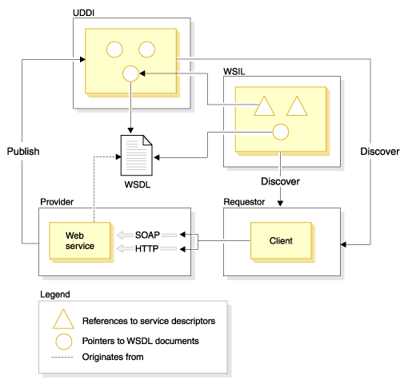

Estandares en servicios
Uno de los atributos clave de estándares de Internet es que se centran en protocolos y no en implementaciones. Internet se compone de tecnologías heterogéneas que operan conjuntamente de modo satisfactorio mediante protocolos compartidos. Esto impide que los proveedores individuales impongan un estándar en Internet. El desarrollo del software de código fuente abierto desempeña un rol fundamental para proteger la interoperatividad de implementaciones de estándares del proveedor.
Los estándares siguientes desempeñan roles clave en servicios Web: UDDI (Universal Description, Discovery and Integration), WSDL (Web Services Description Language), WSIL (Web Services Inspection Language), SOAP y WS-I (Web Services Interoperability). La relación entre estos estándares.
